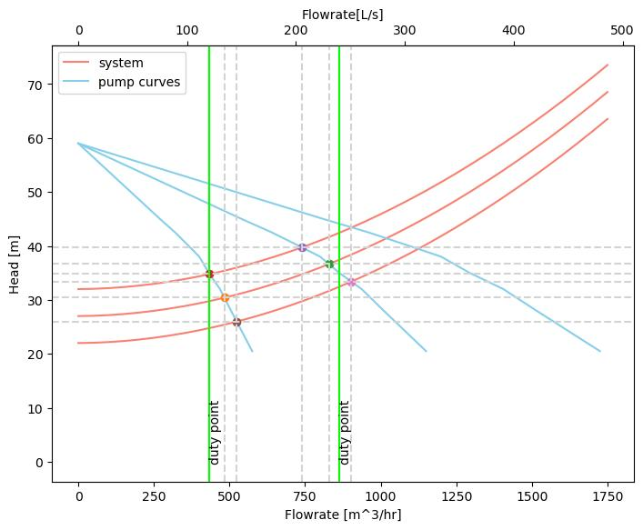
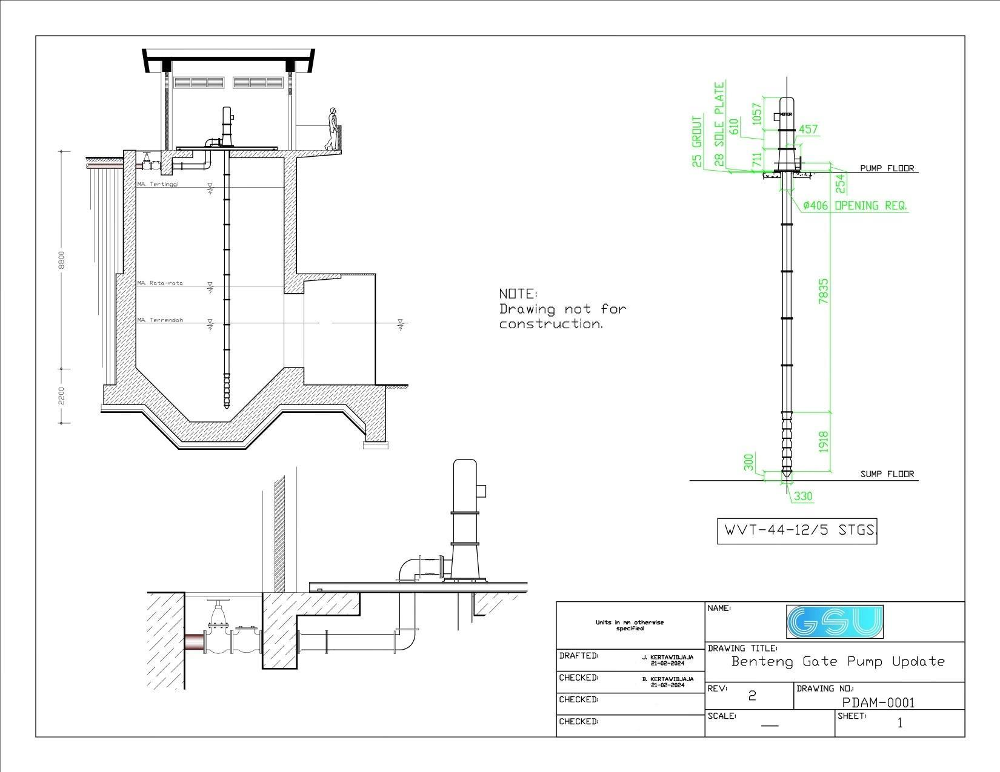

piping system design and pump specification
Background and Objectives
Perumdam Tirta Mayang Kota Jambi (PDAM), located in Jambi has eight intake gates that obtain water from the Batanghari River. Two of these gates are called the Benteng intake and Scada intake, of which will have pump updates provided by Global Solution Universe Inc. (GSU). These updates would include the replacement and/or addition of their existing submersible pumps with specified vertical pumps as per GSU reccomendations.
The pumps currently in used are submersible that have been unreliable due to consistent breaking of their seals. Each maintenance of these seals would require the rewinding of the motor, and with each rewind, the effeciency of the motor will decrease.
 These gates pump water from the intake to the treatment plant at an approximate distance of twelve-
hundred metres (1.2 km) with an elevation increase between the reservoir and treatment surface being
twenty-two metres (22 m). I inlayed the piping route on top of the satellite image
provided by Google Earth to estimate the distance and elevation between the intake and the target. I also considered the drought and flooded condition into account in the study.
These gates pump water from the intake to the treatment plant at an approximate distance of twelve-
hundred metres (1.2 km) with an elevation increase between the reservoir and treatment surface being
twenty-two metres (22 m). I inlayed the piping route on top of the satellite image
provided by Google Earth to estimate the distance and elevation between the intake and the target. I also considered the drought and flooded condition into account in the study.
Method
 To specify the pumps that are needed for the system, I conducted a pump and system curve analysis.
The system curve was obtained by calculating the static and frictional requirements of
the system, where as the pump curve was be obtained from the manufacturer. The plot of these curves can be utilized to
visualize different pump arrangements and operating conditions, such as but not limited to parallel
pumps and the inclusion of a throttling valve.
To specify the pumps that are needed for the system, I conducted a pump and system curve analysis.
The system curve was obtained by calculating the static and frictional requirements of
the system, where as the pump curve was be obtained from the manufacturer. The plot of these curves can be utilized to
visualize different pump arrangements and operating conditions, such as but not limited to parallel
pumps and the inclusion of a throttling valve.
The system curve can be summarized as:
\[H_{system} = (z_2 - z_1) + {{V^2} \over 2g}(\sum {{fL} \over D} + \sum K) \]
The first term of the equation describes the change of elevation of the water surface of the river and the reservoir, the second term describes the frictional loses in the pipe and fittings of the system.
The installation of each pump must also be illustrated into the existing platforms along with any required modifications. These drawings are purely conceptual, and not to be interpreted as detailed drawings.
Pump and System Plots
In order to develop the system curve, the elevation change, length of piping, and the types and number of fittings/valves must also be specified. Since PDAM does not have the piping layout and specific drawings of the system, an approximation of pipe length and fitting information was approximated. The existing operating pumps do have an operating head that can be used as a reference. The table below summarizes the parameters used in this study.
| Parameter | Unit | Measure |
|---|---|---|
| Plant elevation | \[z_2 \] | \[27 m \] |
| Intake elevation | \[z_1 \] | \[5 m \] |
| Pipe diameter | \[D \] | \[400 mm \] |
| Pipe length | \[L \] | \[1210 m \] |
| Pipe roughness | \[\epsilon \] | \[0.061 mm \] |
| Fitting loss coefficient | \[K_{gate} \] | \[0.15 \] |
| \[K_{check} \] | \[2 \] | |
| \[K_{90} \] | \[0.4 \] | |
| \[K_{135} \] | \[1.5 \] | |
| Kinematic viscosity | \[\nu \] | \[1.005E^{-6} {{m^2} \over s} \] |
Parameters from the table above are then used to plot a system curve with various discharges. Halaand's approximation of the Moody Chart was also used in finding the friction factor ùëì
\[f^{-1/2} = - 1.8 log[{6.9 \over Re_d} + ({{\epsilon / d} \over 3.7})^{1.11}] \]
For completion, the equation for Reynolds number for internal pipe flows is presented below
\[Re_d = {{4Q} \over {\pi D \nu}} \]
I wrote a Python code that calculated the headloss values in an array form for plotting. With the system curve, the pump curves can be superimposed on top of it. This would result in a relationship alike to one illustrated in the "Method" section. The system curve was provided by Worthington Pump India Ltd. (WPIL), and I generated parallel pump system curves (with 2 pumps and 3 pumps in parallel) based on their given curve.
With this information, the pump and system curves were superimposed, and an image was developed using the same Python script. The image can be seen in the figure below.
Based on the curve, I found that two pumps will operate at: 829 cubic meter per hour , and 37 m of head pressure. This value coencide with the desired intake florate from the client.
Pump Concept Drawings
I was also responsible in generating conceptual drawings for the mounting of the pumps.
